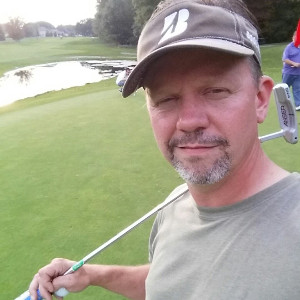

Welcome
I would like for you to meet my buddy AJ.
AJ has surprisingly accomplished quite a bit in his life so far. He is one of those guys that knows a little bit about everything but does not act like an annoying know-it-all. AJ is one of those nice and friendly approachable people that you have no problem talking to asking questions on any topic.
AJ is also an honest guy. If he does not know the answer to something, he will tell you. Chances are pretty good that not knowing will drive him to find the answer for you. Personally, I believe it is due to this drive for knowledge that he has learned so much over the years on so many different topics.
We have worked at the same company but in different departments for many years. Eventually we wound up working together for the same company in the same building. We are just on different teams.
This site is going to offer you a glimpse into the person that is my buddy AJ.